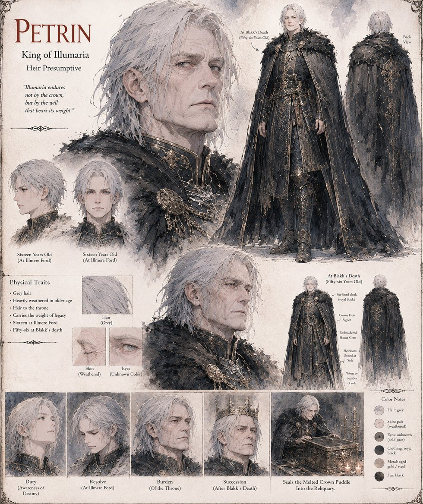

Petrin
Heir Presumptive · later King of Illumaria
Blakk's cousin and heir presumptive, sixteen years old and watching from the walls on the day of the Standing at Illmere Ford, then a grey, heavily audited man of fifty-six by the morning Blakk finally dies. Set for eleven years to personally reconcile every granary shipment against its own certified weight, he uncovers a granary-master's six-year fraud through sheer tedium rather than brilliance, brings it to Blakk directly, and watches his cousin choose mercy calibrated to a debtor's actual circumstances over the arrest three advisors recommend — the lesson of that whole education he later credits above every province he was ever required to govern.
He is one of the last four people Blakk ever tells the truth to, and argues, at first, for confessing it publicly before his cousin is even buried; Sarel talks him out of it. His own coronation, held under the Law of Succession Blakk fought his whole nobility to pass, needs no basilica, lens, or flame — the most boring coronation in Illumaria's recorded history, and, by his own reckoning, the truest proof the law had worked.
“Illumaria endures not by the crown, but by the will that bears its weight.”